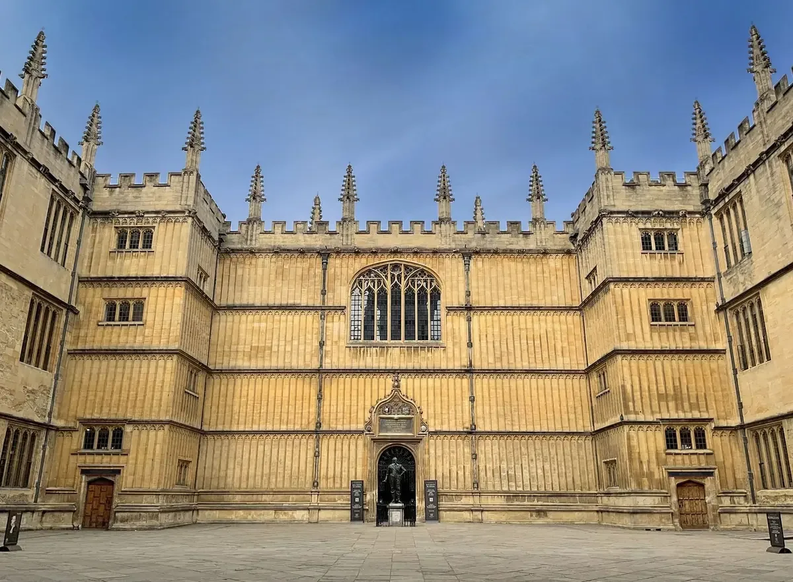
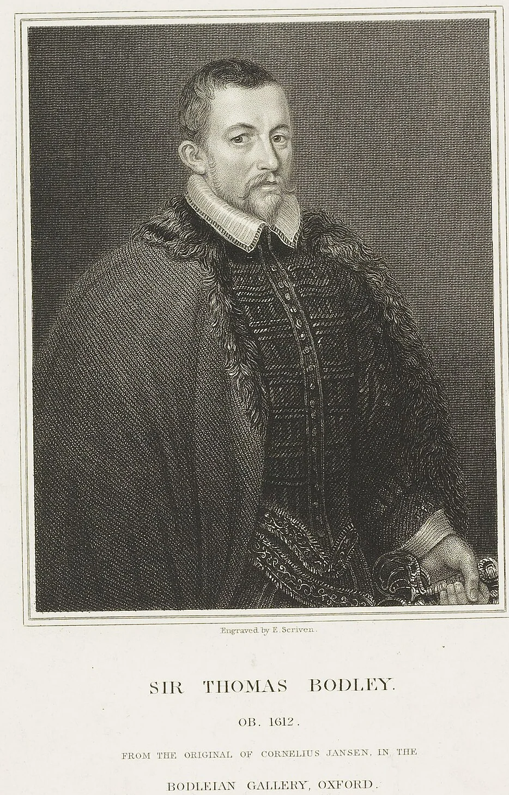
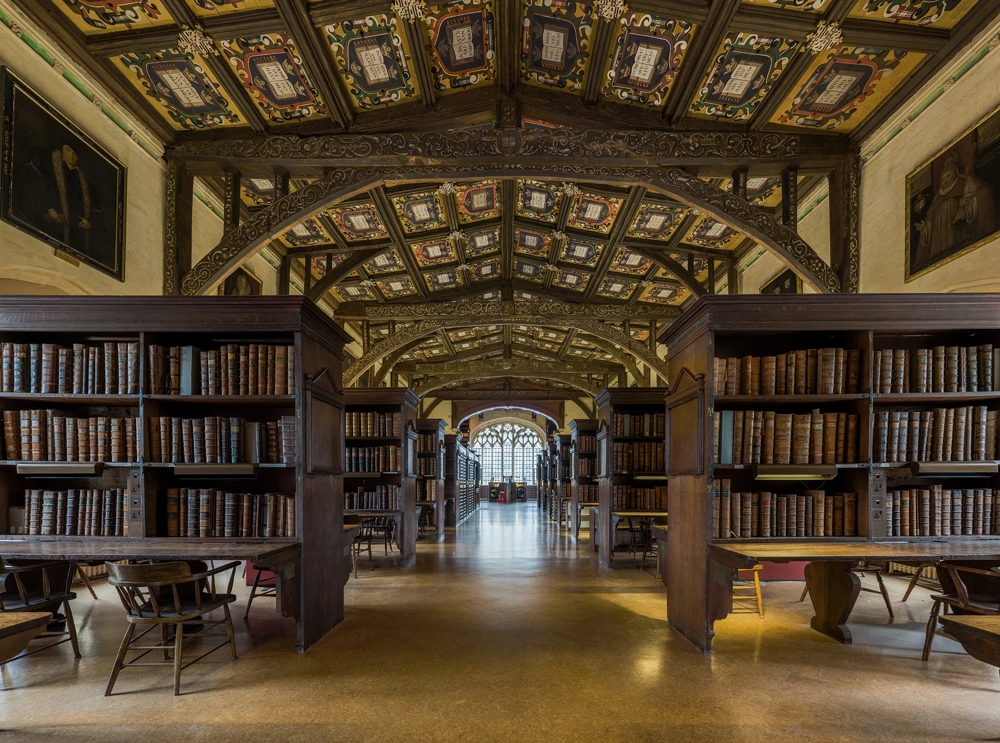
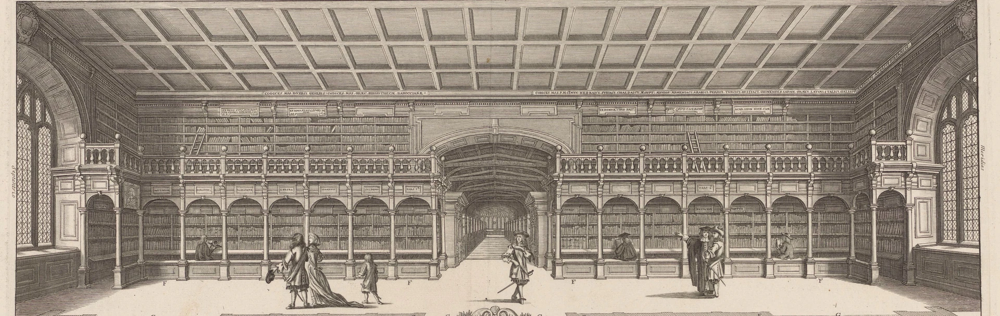
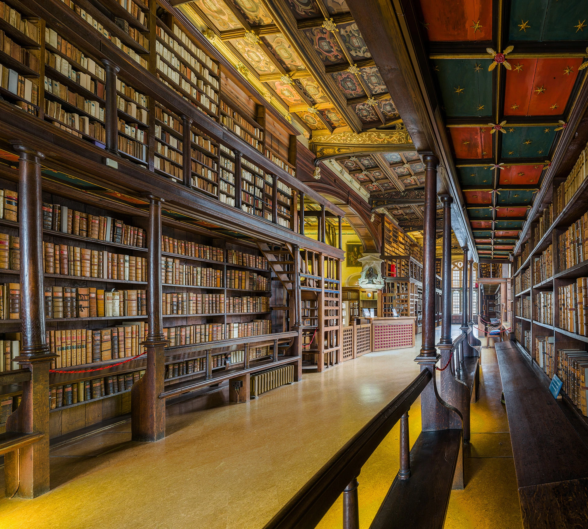

아직 펼치지 않은 카드책을 지키는 약속 · 1옥스퍼드 보들리안 도서관이 도서관을 처음 쓰는 사람은 지금도 한 가지 약속을 해야 해요. 무엇을 가지고 들어가지 않겠다는 약속일까요?옥스퍼드 도서관에 들어가려면 약속을 해야 한대! 무슨 약속일까?
1602년 11월 8일영국 옥스퍼드 · 듀크 험프리 열람실
옥스퍼드 보들리안 도서관
1602년 11월 8일, 영국 옥스퍼드에서 반세기 넘게 텅 비어 있던 대학 도서관 방이 다시 문을 열었어요. 그 방은 400년이 지난 지금도 그 자리에 있어요. 1675년 판화와 오늘 사진을 겹쳐 보며 그 방에 들어가 보세요.
아주 옛날 영국 옥스퍼드에, 책이 다 사라져 텅 빈 도서관 방이 있었대. 보들리라는 사람이 그 방을 다시 책으로 채웠어. 옛날 그림이랑 오늘 사진을 겹쳐 볼까?
검수 전 시안이에요(기준서 1판). 장면에는 보들리안 도서관이 펴낸 역사 기록과 보들리가 스스로 쓴 생애(1647년 펴냄)에 있는 것만 옮겼어요. 상상은 ‘눈 감고 상상해 보기’에만 썼어요.
시안 확인용카드 단계 미리 보기
1
공작의 책
1430~40년대, 영국 왕 헨리 5세의 동생인 글로스터 공작 험프리가 손글씨 책 281권이 넘게 옥스퍼드 대학에 보냈어요. 왼쪽 그림은 그 가운데 한 권의 첫머리예요. 흰 털옷의 공작 앞에, 책을 쓴 수도자가 무릎을 꿇고 붉은 책을 바쳐요.
책을 둘 곳이 모자라자, 대학은 1444년 새 도서관을 짓기로 했어요. 도서관 방은 오른쪽 사진의 돌 천장 신학 강의실 위층에 올렸어요.


공사는 더디다가 1478년에야 제대로 시작됐고, 열 해 뒤 문을 열었어요. 그 방을 지금도 공작의 이름을 따 ‘듀크 험프리 열람실’이라고 불러요.
왕의 동생인 공작님이 손으로 쓴 책을 아주 많이 보냈대. 그래서 이 돌 천장 방 위층에 도서관 방을 지었어.
물어보기책 281권을 한꺼번에 받으면, 너라면 어디에 둘래?
2
텅 빈 방
1550년, 영국 교회에서 로마 가톨릭의 자취를 모두 지우려던 에드워드 6세 때의 법에 따라 대학에도 조사가 왔어요. 그 뒤 도서관은 책을 모두 잃었어요. 17세기 역사가 앤서니 우드는 그 책들이 불태워지거나, 헐값에 팔리거나, 개혁을 이끈 사람들이 제 몫으로 가져갔다고 적었어요.
1556년에는 책상마저 팔렸고, 빈방은 의학부가 썼어요. 40여 년 뒤, 오랫동안 외교관으로 일한 토머스 보들리가 이 방을 떠올렸어요. 그는 스스로 쓴 생애에 이렇게 적었어요.

“마침내 옥스퍼드 도서관 문 앞에 내 지팡이를 세우기로 마음먹었어요. 나라 일에서 물러나 홀로 지내는 동안, 그때 구석구석 허물어지고 버려져 있던 그곳을 다시 학생들이 함께 쓰는 곳으로 되돌리는 것보다 더 보람 있게 나를 쓸 일은 없다고 굳게 믿었으니까요.”
토머스 보들리, 『스스로 쓴 생애』(1609년까지 쓰고 1647년 옥스퍼드에서 펴냄) · 이 안내서가 우리말로 옮김
‘지팡이를 세운다’는 건 그곳에 자리를 잡고 머문다는 옛 영어 표현이에요. 보들리는 이 일에 네 가지가 있어야 한다고 적었어요. 옛말과 요즘 말을 아는 지식, 비용을 댈 돈, 뜻을 도울 친구들, 그리고 넉넉한 시간이요.
1598년, 대학은 그의 돈을 받아들였어요. 빈방에 다시 가구를 들여, 새로 모은 책 2,500권쯤을 둘 수 있게 했어요.
책도 책상도 다 없어진 빈방이 있었대. 보들리 아저씨는 그 방 문 앞에 자리를 잡고 다시 채우기로 했어.
물어보기텅 빈 방을 다시 도서관으로 만들려면, 무엇 무엇이 있어야 할까?
3
다시 연 방
1602년 11월 8일, 그 방이 다시 문을 열었어요. 사서 토머스 제임스가 책을 맡았고, 1605년에는 처음으로 인쇄한 책 목록이 나왔어요. 사람들은 이곳을 세운 사람의 이름을 따 ‘보들리안 도서관’이라고 불러요.
1488년에 문을 연 그 방은 지금도 그 자리에 있어요. 손잡이를 밀어, 70여 년 뒤 판화가가 새긴 열람실과 오늘 사진을 겹쳐 보세요.
가운데 손잡이를 밀어 1675년 판화와 2015년 사진을 겹쳐 보세요.


왼쪽 · 데이비드 로건의 판화 「보들리안 도서관 안, 동쪽에서 본 모습」(1675)의 가운데 부분 · 판화: 데이비드 로건(David Loggan) · 퍼블릭 도메인 · 위키미디어 공용(레이크스 미술관)
오른쪽 · 듀크 험프리 열람실, 2015년 · 사진: David Iliffe(Diliff) · CC BY-SA 3.0 · 위키미디어 공용
판화가는 1610~12년에 보들리가 동쪽으로 늘려 지은 끝 방에 서서, 큰 아치 너머 옛 열람실을 바라보며 새겼어요. 사진은 그 옛 열람실 안에서 찍었어요. 아치 너머로 길게 이어지는 책장 줄과 무늬 천장이 지금도 그대로예요.
400년 전에 다시 문을 연 방이, 지금도 그대로 있대!
물어보기옛 그림이랑 오늘 사진에서 똑같은 걸 하나 찾아볼까?
4
불 없는 방의 약속
보들리안 도서관을 쓰는 사람은 지금도 약속을 해요. 도서관의 책과 문서를 가져가거나 더럽히거나 상하게 하지 않고, 불이나 불꽃을 들여오거나 피우지 않고, 담배를 피우지 않고, 도서관의 규칙을 지키겠다는 약속이에요.
불을 그토록 조심한 데는 까닭이 있었어요. 이 도서관에는 1845년까지 난방이 없었고, 1929년까지 불을 밝히는 조명도 없었어요. 그래서 겨울에는 오전 10시부터 오후 3시까지만 문을 열었어요.

1675년 판화 속 사람들도 큰 창 아래 책상에서 책을 읽어요. 책은 밖으로 빌려주지 않았어요. 1645년에는 찰스 1세 왕이 빌려 달라고 했지만, 도서관은 거절했어요.
1610년, 보들리는 런던의 출판 조합과도 약속을 맺었어요. 영국에서 펴내 조합에 등록한 새 책을 한 부씩 이 도서관에 보내기로요. 책을 지키는 약속에, 책을 모으는 약속이 더해졌어요.
여기 오는 사람은 불을 가지고 들어가지 않겠다고 약속한대. 옛날엔 불 켜는 등도 없어서, 해 있을 때만 책을 읽었대!
물어보기불도 등도 없는 도서관이라면, 너는 몇 시쯤 책을 읽으러 갈래?
눈 감고 상상해 보기
겨울 오후, 세 시가 가까워요. 큰 창으로 드는 빛이 점점 기울고, 돌바닥에서 올라오는 찬 기운에 발끝이 시려요. 들리는 건 책장을 넘기는 소리뿐이에요. 반세기 넘게 비어 있던 이 방에, 지금은 책 냄새가 가득해요.
눈을 감아 봐. 추운 겨울 오후야. 창으로 해님이 비치고, 사각사각 책장 넘기는 소리만 들려. 해가 지기 전에 다 읽어야 해!
나의 자리
텅 빈 자리를 다시 채우는 일에, 나는 어떤 책 한 권을 보탤 수 있을까요?
도서관에서 지켜야 할 약속은 뭐가 있을까?
마음에 닿는 한 줄을 고르거나 직접 써 보세요. 한 줄을 남기면 이 자리의 도장이 찍혀요. 이 기기에만 저장돼요.
더 깊이
궁금한 칸만 펼쳐 읽어도 괜찮아요.
알고 보면
험프리 공작 영국 왕 헨리 5세의 동생이에요. 그가 보낸 책에는 옛 그리스·로마 고전을 옮겨 쓴 귀한 사본도 여럿 있었어요.
돌아온 책 장면 1의 그림이 든 『출애굽기 주해』는 공작이 1443~1444년 대학에 보낸 책이에요. 1550년 뒤 도서관을 떠나 여러 사람의 손을 거쳤고, 1897년 1월 보들리안 도서관이 런던의 한 책방에서 다시 사들였어요.
‘지팡이를 세우다’ 보들리가 쓴 영어 표현(set up my staff)은 ‘그곳에 자리를 잡고 머물다’라는 뜻의 옛말이에요. 나라 일에서 물러난 뒤의 시간을 이 도서관에 쓰겠다는 결심이었어요.
책을 모으는 약속 1610년 출판 조합과의 약속은 처음에는 잘 지켜지지 않았다고 도서관 역사는 솔직하게 적어요. 그래도 이 약속은 새 책을 도서관에 맡기는 ‘납본’의 이른 모습이 되었어요.
이 방을 본뜬 곳 1600년 무렵 보들리는 이 방에 쇠창살과 사슬 같은 쇠붙이를 달았어요. 1611년 헤리퍼드 대성당의 사슬 도서관은 얼마 전 옥스퍼드 대학에 들어선 도서관들을 본떠 지었고, 쇠붙이는 옥스퍼드에서 주문했어요. 이 묶음의 다음 카드 「사슬에 묶인 책」으로 이어져요.
기록마다 다른 점
보들리가 태어난 해 보들리는 스스로 ‘1544년 3월 2일 엑서터에서 태어났다’고 적었어요. 그런데 많은 책은 1545년이라고 써요. 그때 영국은 새해를 3월 25일부터 셌기 때문에, 1월부터 3월 24일까지는 지금 달력보다 한 해 적게 적었어요. 그래서 같은 날이 1544년도 되고 1545년도 돼요.
공작이 책을 보낸 해 앞면에는 1435~1437년이라고 적었어요. 1915년 보들리안 도서관 학술지에 실린 목록은 공작의 선물을 1439년·1441년·1444년 세 번으로 정리해요. 보들리안 도서관의 사본 목록은 장면 1의 책을 ‘1443~1444년에 공작이 준 책’으로 적어요. 그래서 이 카드는 ‘1430~40년대’라고 썼어요.
직접 가 보기

확인한 날 · 2026년 11월 18일 · 바뀌기 쉬운 정보라 정기적으로 다시 확인해요
옥스퍼드 시내 한가운데에 있어요. 보들리안 도서관 누리집은 30분짜리 안내 관람과 무료 전시를 소개해요.
위층 듀크 험프리 열람실에 들어가는 방법과 여는 때는 누리집에서 미리 확인하세요.
그때와 지금 금박
손잡이를 양쪽 끝까지 밀어 1675년 판화와 2015년 사진을 다 보면 카드에 금박이 입혀져요.
손잡이를 끝까지 밀어 1675년과 오늘을 다 보기
아이와 함께 채색
아이와 함께 ‘영화처럼 보기’를 끝까지 보면 카드가 채색돼요.
아이와 함께 ‘영화처럼 보기’를 끝까지 보기
근거 보기 (11)
- Bodleian Library, 「History of the Bodleian」(PDF) — 281권이 넘는 공작의 책, 1444년 결정, 1478년 공사·10년 뒤 개관, 1550년 조사와 책을 잃음(앤서니 우드), 1556년 책상 매각, 1598년, 2,500권, 1602년 11월 8일, 토머스 제임스, 1605년 목록, 1610년 출판 조합, 끝 방(1610~12), 대출 없음과 1645년 찰스 1세, 1845년 난방·1929년 조명, 겨울 여는 시간(오전 10시~오후 3시)
- Thomas Bodley, 『The Life of Sir Thomas Bodley, written by himself』(Oxford, 1647, EarlyPrint 판) — 1544년 3월 2일, ‘set up my Staff at the Library door’, 네 가지 도움
- University of Oxford, 「Libraries Curators Regulations 1 of 2014」 — 보들리안 도서관 서약 전문
- Webster’s Revised Unabridged Dictionary(1913) ‘staff’ — To set up one’s staff: 자리를 잡고 머물다(옛말)
- Renaissance News(1961) 「Duke Humphrey and His Medical Collections」 — 주석의 크래스터 목록(Bodleian Quarterly Record, 1915): 1439·1441·1444년 공작의 선물
- Medieval Genealogy: Chronology and dating — 영국은 1751년까지 한 해를 3월 25일부터 셈
- Bodleian Libraries, 중세 사본 목록: MS. Duke Humfrey b. 1 — 존 캡그레이브 『출애굽기 주해』, 1440년 무렵, 1443/4년 공작이 줌, 1897년 1월 런던 책방에서 되삼
- Victoria County History, Oxford 3권 「The Bodleian Library」 — 1600년 쇠창살·사슬 같은 쇠붙이, 아츠 엔드(1610~12)는 옛 도서관에서 동쪽으로 뻗음
- 마파 문디·사슬 도서관 공식 누리집 — 1611년 헤리퍼드 사슬 도서관은 옥스퍼드 대학 도서관들을 본뜨고 쇠붙이는 옥스퍼드에서 주문
- Bodleian Libraries: 방문 안내(30분 안내 관람, 무료 전시) · 2026-11-18 확인
- 위키미디어 공용: 데이비드 로건 판화(1675, 레이크스 미술관) 정보
그림·사진·소리 출처
- 그림: 이름 모를 15세기 화가 · 퍼블릭 도메인 · 위키미디어 공용(보들리안 도서관 MS. Duke Humfrey b. 1)
- 판화: Edward Scriven(원화 Cornelius Johnson) · 퍼블릭 도메인 · 위키미디어 공용(루뱅 대학 도서관)
- 사진: David Iliffe(Diliff) · CC BY-SA 3.0 · 위키미디어 공용
- 판화: 데이비드 로건(David Loggan) · 퍼블릭 도메인 · 위키미디어 공용(레이크스 미술관)
- 사진: David Iliffe(Diliff) · CC BY-SA 3.0 · 위키미디어 공용
- 판화: 데이비드 로건(David Loggan) · 퍼블릭 도메인 · 위키미디어 공용(레이크스 미술관)
- 사진: David Iliffe(Diliff) · CC BY-SA 3.0 · 위키미디어 공용
- 사진: Honcques Laus · CC0 · 위키미디어 공용
‘처음 만나는 기독교 문화’의 깊은 카드예요. 실제 인물의 사진은 쓰지 않았어요. 카드 단계와 남긴 글은 이 기기에만 저장돼요.